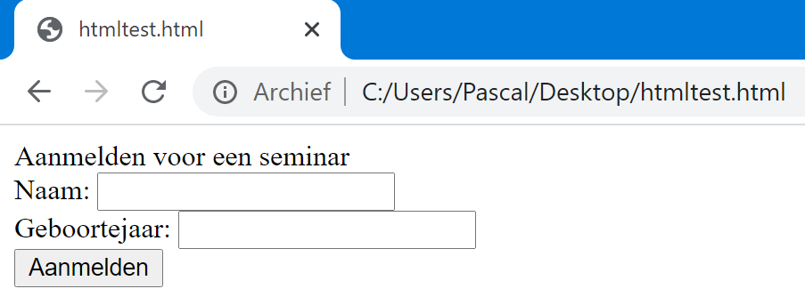
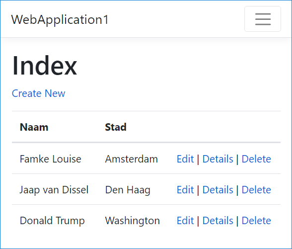

Het eerst deel is de naam van de Controller (standaard: Home)
Het tweede deel is de naam van de Action method (standaard: Index)
Het derde deel zijn parameters (later hierover meer)
Wat gebeurt er als er een typefout staat in:
de naam van de Controller?
de naam van de Action Method?
Ik zie een lege pagina (bij mij in Chrome)
Maar na F12 zie ik in de netwerk-tab een 404-error
En wat gebeurt er als je een Action Method private maakt?
Of wat gebeurt er bij de toevoeging van de volgende annotatie?
[HttpPost]
public string Index() {
return "This is my default action...";
}
En wat gebeurt er tenslotte als ik de de annotatie [HttpGet] gebruik?
Hoe kun je met een Controller bijvoorbeeld de tijd laten zien?
public string DeTijd()
{
DateTime t = DateTime.Now;
String message = string.Format("De tijd is {0} uur en {1} minuten", t.Hour, t.Minute);
return message;
}
Nu heb ik een echte dynamische pagina!
Nu geven we een parameter mee: http://localhost:xxxxx/helloworld/welcome/?naam=jan
public string Welcome(string naam)
{
DateTime t = DateTime.Now; string message;
if (t.Hour<12)
message = string.Format("Goedemorgen {0}", naam);
else
message = string.Format("Goedemiddag {0}", naam);
return message;
}
Door de parameter is de pagina dynamisch geworden
Als je wilt weten hoe de applicatie werkt, kunt een breakpoint in de code plaatsen
Oefening 1:
Maak een Action Method optellen
Deze heeft 2 parameters: getal1 en getal2
Uitvoer: 3 + 4 = 7 (natuurlijk afhankelijk van de waardes voor getal1 en getal2)
Url: http://localhost:xxxxx/helloworld/persoon/1 (volgens routinglogica is 1 er een parameter) komt terecht bij:
public string Persoon(int id)
{
List namenLijst = new List { "Jan", "Klaas", "Wim", "Alexander" };
string message = string.Format("Persoon {0} op de lijst heet {1}",
id, namenLijst.ElementAt(id));
return message;
}
Deze routing werkt alleen als template van MapRoute in Startup.cs is gedefinieerd als:
template: "{controller=}/{action=}/{id?}"
De parameter-definitie geldt voor de hele applicatie. Wil je dat parameter als naam wordt genomen?
template: "{controller=}/{action=}/{naam?}"
Wat gebeurt er als je een parameter vergeet mee te geven in de URL?
check ook wat er gebeurt als je een string meegeeft i.p.v. een integer
Wat gebeurt er als je 5 of -1 als id meegeeft?
Wat gebeurt er als je een Action Method overload?
Oh ja: een methode met dezelfde naam, maar met verschillende parameters.
Probeer er eens één met parameter te definiëren en één zonder parameter
Probeer nu eens een teller bij te houden die aangeeft hoe vaak de pagina is opgevraagd
Definieer een member variabele teller in de controller class. Lukt dat?
Statische bestanden (zoals plaatjes of stylesheet-bestanden) kun je plaatsen in de map wwwroot
De routinglogica snapt dat deze bestanden hier staan
Inclusief het path van een url
Wat gebeurt er als je een plaatje in de Controller-map plaatst?
En wat gebeurt er als je een controller in de wwwroot-map plaatst?
Maar bij de eerstvolgende overbodige spatie of Enter na de @ wordt code geïnterpreteerd als HTML
Met @{ ... } kun je meerdere C#-regels groeperen
In een View staat zo weinig mogelijk C#-code
Dat hoort bij nette code volgens MVC
@{
Layout = "";
ViewData["Title"] = "Index";
DateTime huidigeTijd = DateTime.Now;
}
<p>Het is nu @huidigeTijd.Hour : @huidigeTijd.Minute : @huidigeTijd.Second</p>
Wat is de dubbele punt: HTML of C#?
De Controller bepaalt wat je ziet in een View
Dit is een afspraak die hoort bij de keuze voor MVC
Ons voorbeeld is daarom niet goed: de huidige datum zou al vanaf de Controller meegegeven moeten worden in bijv. ViewData
In de Controller-class:
public IActionResult Index()
{
ViewData["HuidigeTijd"] = DateTime.Now;
return View();
}
In de Razor-View:
@{
Layout = "";
DateTime huidigeTijd = (DateTime) ViewData["HuidigeTijd"];
}
<p>@ViewData["HuidigTijd"]</p>
<p>Het is nu @huidigeTijd.Hour : @huidigeTijd.Minute : @huidigeTijd.Second</p>
Wat is code refactoring ook al weer?
Code refactoring is het proces van het herstructureren van bestaande computercode, zonder het externe gedrag te veranderen. Refactoring is bedoeld om het ontwerp, de structuur en / of implementatie van de software (de niet-functionele attributen) te verbeteren met behoud van de functionaliteit.
Met objecten (zoals DateTime) is het wat lastiger (er is casting nodig).
Dat wil je liever niet. Kan dat ook anders?
Oefening 1:
Maak een View waarin je de voornaam, achternaam en adres van een student toont
De gegevens komen nog niet uit een database maar zijn hardcoded
Denk aan de rol van de Controller en de View volgens de regels van MVC
Oefening 2:
Zorg dat de volgende link werkt:
localhost:8080/StudentAdmin/Student/1
Ook List<Student> Studenten is hard coded (nog niet uit een database)
De Action-methode Student toont het adres van Student 1 uit de lijst met Studenten
Uiteraard mag de parameter ook 2 of 3 zijn
Als je de view vergeten bent aan te maken?
Of als je de Action method een andere naam geeft?
En als je een typefout maakt in de key van het Dictonary-Object ViewData
Bijvoorbeeld: ViewData["Namae"]
Is die key overigens case sensitive: ViewData["naaM"]?
Klaagt de compiler over typefouten?
Wat gebeurt er als je een object opvraagt dat nooit is aangemaakt?
En als het casten niet is toegestaan?
Omdat het gebruik van ViewData een aantal nadelen heeft is er een andere manier om data door te geven.
Dat doe je door een (lijst met) Object(en) van een Model-class mee te geven aan de View
Het grote voordeel:
De compiler kan nu wel controleren of een property bestaat
Het datatype gaat mee, dus casten wordt overbodig.
En – niet onbelangrijk: Intellisense werkt ook in de Razor-file
Aanmaken van een model class in de map Models.
namespace WebApplicationCoreVoorbeeld.Models
{
public class Student
{
public int StudentId { get; set; }
public string Voornaam { get; set; }
public string Achternaam { get; set; }
public string Woonplaats { get; set; }
public DateTime GeboorteDatum { get; set; }
}
}
In de controller schrijf je de volgende code:
public IActionResult Student()
{
Student s = new Student() {Voornaam = "Eva", Achternaam="Jansen",
StudentId =2, Woonplaats="Den Haag",
GeboorteDatum = new DateTime(1990, 11,25)};
return View(s);
}
Later leer je nog hoe je de gegevens van Studenten in een MVC-applicatie bijvoorbeeld op kunt halen uit een database (i.p.v. het hier hard coded te programmeren)
In de layout file behorend bij de action method
@model WebApplicationCoreVoorbeeld.Models.Student
@{
Layout = "";
}
<div>Student @Model.Voornaam @Model.Achternaam woont in @Model.Woonplaats</div>
<div>Zij is geboren in @Model.GeboorteDatum.Year</div>
<div>Haar id is: @Model.StudentId</div>
public IActionResult Studenten ()
{
List<Student> lijst = new List<Student>() { new Student() {
Voornaam = "Eva",
...
return View(lijst);
}
Je geeft nu List als Model-object mee aan de View
Dit is allemaal conform de Razor syntax:
@using WebApplicationCoreVoorbeeld.Models
@model List<Student>
@{
Layout = "";
}
@foreach (Student s in Model)
{
<div>Student @s.Voornaam @s.Achternaam woont in @s.Woonplaats</div>
}
De eerste overbodige spatie/enter na @foreach volgt na {.
Oefening 1:
Laat de volgende URL werken:
localhost:8080/StudentAdmin/Student/1
Deze toont het adres van student 1 uit een List
De List is hard coded gedefinieerd in de Controller
Uiteraard mag de parameter ook 2 of 3 zijn
Oefening 2:
Laat de volgende URL werken:
localhost:8080/StudentAdmin/Student/1
In de View wordt nette HTML gebruikt, waarmee de lijst met alle studenten wordt getoond.
Dit is HTML (geen Razor):
<div>Aanmelden voor een seminar</div>
<form name="aanmelding" action="/administratie/aanmeldingverwerken"
method ="get">
<div>Naam: <input name="Naam" type="text" /></div>
<div>Geboortejaar: <input name="Geboortejaar" type="text" /></div>
<div><input type="submit" value="Aanmelden" /></div>
</form>

Een voorbeeld van een Action Method in een Controller die de inhoud van een formulier verwerkt:
public IActionResult AanmeldingVerwerken(string Naam, int Geboortejaar)
{
if (GeboorteJaar < 1998)
{
ViewData["Message"] = "Hartelijk dank meneer/mevrouw " + Naam;
}
else
{
ViewData["Message"] = "Helaas bent u nog te jong.";
}
return View();
}
En de bijbehorende view:
<div>We hebben uw aanmelding ontvangen.</div>
<div>@ViewData["Message"]</div>
Parameters van de Action Method komen overeen met de namen van de velden in het HTML-formulier
Wat gebeurt er als het geboortejaar geen integer is maar tekst?
Of als de gebruiker geen waarde heeft ingevuld voor geboortejaar?
Met HttpGet kun je parameters zien in de adresbalk
Met HttpPost worden de parameters “onzichtbaar” meegegeven
Maak gebruik van “F12” op netwerk-tab om te ontdekken hoe het formulier dan wordt meegegeven.
NB: normaal zou je de aanmelding natuurlijk ook ergens opslaan zodat je later op kunt zoeken of meneer Jansen zich inderdaad heeft aangemeld.
Maak een formulier waarin 2 ingevoerde getallen bij elkaar worden opgeteld:
Bij Submit worden de getallen opgeteld
Bij een invoer van getallen 4 en 5 wordt de uitvoer "4 + 5 = 9".
Uitbreiding: geef de gebruiker de mogelijkheid om te kiezen of 2 getallen opgeteld, afgetrokken, vermenigvuldigd of gedeeld moeten worden.
Beperk je daarbij tot 1 formulier en 1 Submitbutton
De operator kun je aangeven door deze:
in een tekstveld in te voeren;
te kiezen uit een lijst m.b.v. de selectie van 1 radiobutton of
te kiezen uit een dropdown-lijst.
CRUD staat voor Create, Read, Update en Delete
Veel applicaties hebben deze functionaliteit t.b.v. beheer van de data ingebouwd
Bijvoorbeeld Personen, Studenten, Producten etc.
Hieronder een voorbeeld van ingebouwde CRUD-functionaliteit voor Personen:

Voor welke entiteit willen we een Create maken?
Lees die vraag als: voor welke modelclass wil je een nieuw object aanmaken?
In dit geval doen we dat voor de modelclass Student:
public class Student
{
public int StudentId { get; set; }
public string Naam { get; set; }
public string Woonplaats { get; set; }
public int GeboorteJaar { get; set; }
}
Het formulier moet alle velden van de modelclass bevatten die de gebruiker in mag vullen. Dus niet: het StudentId-veld
<form name="aanmelding" action="/administratie/create" method ="post">
<div>Naam: <input name="Naam" type="text" /></div>
<div>Woonplaats: <input name="Woonplaats" type="text" /></div>
<div>Geboortejaar: <input name="Geboortejaar" type="text" /></div>
<div><input type="submit" value="Aanmelden" /></div>
</form>
De conventie/afspraak is dat je met HttpPost naar een Action-method met dezelfde naam gaat
De Action-method Create in de Controller AdministratieController:
[HttpPost]
public IActionResult Create(Student s)
{
//todo opslaan in de database
return View("IsCreated", s);
}
(De 1e parameter is de naam van de View, omdat de View met dezelfde naam (Create) al wordt gebruikt voor de View waarmee het formulier wordt getoond)
De View in Views\IsCreated.cshtml:
@using WebApplicationCoreVoorbeeld.Models;
@model Student
<div>Er is een nieuwe student opgeslagen</div>
<div>Naam: @Model.Naam</div>
<div>Woonplaats: @Model.Woonplaats</div>
<div>Geboortejaar: @Model.Geboortejaar</div>
In het voorbeeld hebben we de modelclass Student gebruikt als inputparameter van de Action-method
zolang de namen van de HTML velden overeenkomen met de properties, gaat dat goed
Je kunt ook alle attributen van Student als afzonderlijke parameters opnemen. Dat heeft nadelen:
Daar heb je meer code voor nodig en de namen/types moeten precies kloppen
Bij elke wijziging van de Modelclass moet dit worden gewijzigd in alle Action-methods
Op de vorige pagina gebruikte je een View met een andere naam
Na Create zie je ook vaak dat je doorgaat naar een lijst waarin de zojuist toegevoegde Student al is toegevoegd
Voor het tonen van een lijst met Objecten wordt standaard gebruik gemaakt van de Action Index: return RedirectToAction("Index");
Post/Redirect/Get (PRG) is een web development design pattern dat voorkomt dat er meerdere keren een zelfde form wordt gepost
Samengevat: door de Redirect voorkom je dat een record 2x wordt toegevoegd als de gebruiker voor F5 (verversen) kiest:
In dat geval wordt namelijk de Action-method Index opnieuw opgevraagd
en niet de HttpPost-action Create waar nog een keer hetzelfde nieuwe record wordt toegevoegd.
Het principe PRG zegt dat je na een Post-Action altijd een Redirect doet en nooit rechtstreeks een View teruggeeft.
In het screenshot zijn Create new, Edit, Details en Delete normale HTML links: <a href=...
Naar welke Action-method gaat: <a href="/Studenten/Create">klik hier</a>
De routing logic zorgt ervoor dat als de gebruiker op deze link klikt en dus een HTTP(S)-request maakt dat hij/zij in de juiste controller bij de juiste Action-method terecht komt.
Deze is vrijwel gelijk aan Create
Maak een Action-method Edit
http://localhost/students/edit/3
De 3 is gelijk aan het id van de student die je wilt editen
LET OP dat je de parameter in de routing in Startup.cs zet op {…}/{…}/{id?}
Het grote verschil is dat het formulier nu wordt gevuld met bestaande waarden (van Student met id 3)
Het formulier is dus niet meer leeg zoals bij de Create.
Het is belangrijk dat je de id van het record kent om het formulier in te kunnen vullen.
De verwerking gebeurt weer in een HttpPost-action Edit
Deze zal nu een bestaand record wijzigen i.p.v. een nieuwe toevoegen
Een lijst met alle records is volgens de standaard conventie de action Index
http://localhost/students/index
Een pagina met gegevens van 1 student is standaard
http://localhost/students/details/4
De StudentId (met id als naam voor de parameter) is in dit geval gelijk aan 4
Om een record te verwijderen is de link
http://localhost/students/delete/4
De StudentId (met id als naam voor de parameter) is in dit geval gelijk aan 4
Na de Submit wordt om bevestiging gevraagd: "Weet je zeker dat je deze Student wilt verwijderen?"
Een Student wordt pas echt verwijderd in de HttpPost-Action Delete
Maak de complete CRUD-cyclus voor 1 entiteit
Bijvoorbeeld voor het beheer van een product (naam, omschrijving, fabrikant en prijs)
Gebruik Modelclasses waar dit kan!
Uitbreiding: Is het ook mogelijk om te valideren dat de naam van een product niet leeg mag zijn?
Of: dat de prijs verplicht hoger ligt dan € 0,00?
In Tutorials kun je ook Tag Helpers terugvinden
Gebruik deze nu nog niet maar gebruik alleen standaard HTML in je View- en Layout-bestanden
Tag Helpers worden in latere lessen nog behandeld
Blazor is misschien de toekomst, maar voor semester 3 is het verboden.
Blazor is geen Razor
wat gaan we de volgende les doen?....